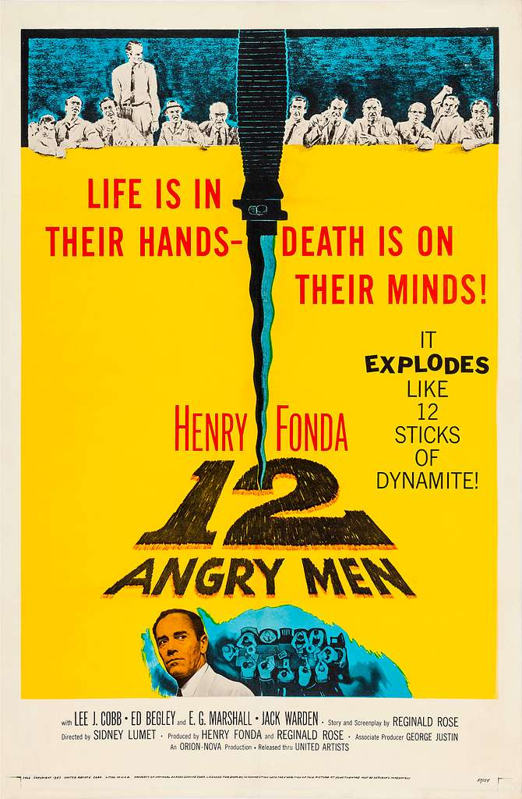
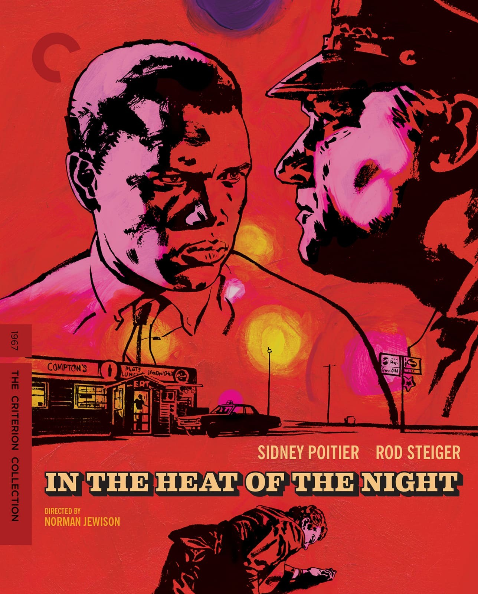
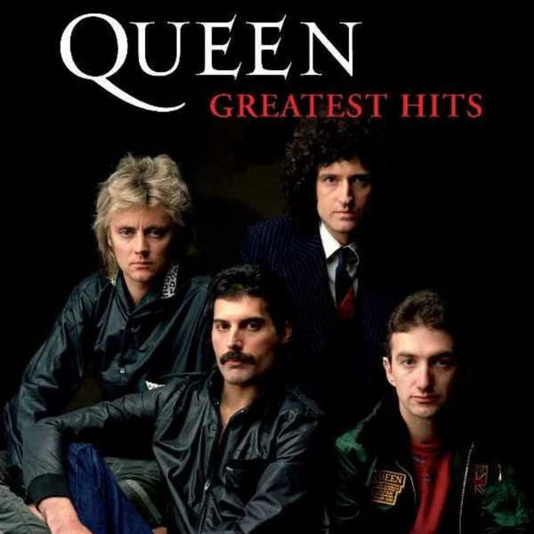
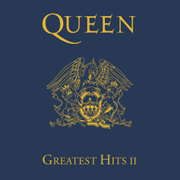

Habilidades
Hardware de computadoras85%
Infraestructura TI70%
Instalaciones eléctricas60%
Cloud computing20%
¿Qué hago?
Me especializo en hardware de computadoras y soporte de sistemas operativos. Actualmente estoy cursando una tecnicatura superior en desarrollo de software.
Mi hobby es la radioafición.
Películas favoritas
01

Doce hombres en pugnaSidney Lumet · 1957
02

El gran dictadorCharles Chaplin · 1940
03

Al calor de la nocheNorman Jewison · 1967
Discos favoritos
01

Queen Greatest Hits IQueen · 1981
02

Queen Greatest Hits IIQueen · 1991
03

DynastyKiss · 1979